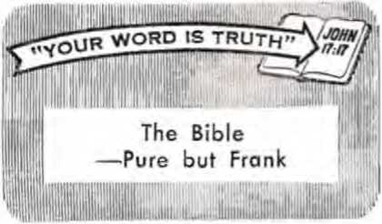

Serve the God Who Remembers
Confessed Criminals on the Streets
Oil—by the Square Mile!
The Strange Cult of Maria Lionza
JUNE 22. 1967
THE REASON FOR THIS MAGAZINE
News sources that are able to keep you awake to the vital issues of our times must be unfettered by censorship and selfish interests. "Awake!" has no fetters. It recognizes facts, faces facts, is free to publish facts. It is not bound by political ties; it is unhampered by traditional creeds. This magazine keeps itself free, that it may speak freely to you. But it does not abuse its freedom. It maintains integrity to truth.
The viewpoint of "Awakel” is not narrow, but is international. "Awake!" has its own correspondents in scores of nations. Its articles are read in many lands, in many languages, by millions of persons.
In every issue "Awake!” presents vital topics on which you should be informed. It features penetrating articles on social conditions and offers sound counsel for meeting the problems of everyday life. Current news from every continent passes in quick review. Attention is focused on activities in the fields of government and commerce about which you should know. Straightforward discussions of religious issues alert you to matters of vital concern. Customs and people in many lands, the marvels of creation, practical sciences and points of human interest are all embraced in its coverage. "Awake!” provides wholesome, instructive reading for every member of the family.
"Awake!" pledges itself to righteous principles, to exposing hidden foes and subtle dangers, to championing freedom for all, to comforting mourners and strengthening those disheartened by the failures of a delinquent world, reflecting sure hope for the establishment of God's righteous new order in this generation.
Get acquainted with "Awake!” Keep awake by reading "Awakel”
Published Semimonthly bx
WATCHTOWER BIBLE AND TRACT SOCIETY OF NEV YORK, INC. .117 Adams Street Brooklyn. N.Y. 11201, U.S.A.
N. H. Kni.x;.. President Grant Suiter. Secretary
Average printing each issue: 4,550,000 Fl« cent! a «H
Yearly subscription rate
Cfficf ‘ (or semimonthly editions
America, U.S.. J17 Adi > . Brooklyn. N.Y 11201 <1
Awstrolla, 11 Beresford Rd . •■'lT- **ld. N.8.W Canada. 150 Bridgeland Ale., Toronto 19. Ont VI England. Watch Tower House,
The Ridgeway. London N.W. 7 7/6
New Zealand. 621 New North lii . Au?. ■ I 3.W 1 7/-Sotrth Africa. Prl'.ate Bag 2, P.O Eh’ <1m• M.Mn. Tvl. 70c
(Monthly editions cost half the above rates.) Remittances for itibscripUone should be * to the office In your country. Otherwise f?nd your r»T 1 nr* to Brooklyn. Notice of expiration is sent at le. I-' -a licforr
Mj'iiscrtptlon expires.
Now published in 26 languages
Semimonthly—Afrikaans. Cebuano, Danish, Dutch, English. Finnish, French. Germa.i, Greek. Ifoko. ItaHin. .Japanese. Korean. Norwegian, Portur’ess, Spanish, Swedish, Tagalo;. Zulu.
Monthly--Cl rt, Cinyanla, Oil .'fey non, Malayalam, Polish, Tamil. Ukrainian.
CHANGES OF ADDRESS should reach as thirty days before ytnsr moving date. Give as yo«r old and new address (if possible, your old address label). Write Wstchtewer 117 Adams Street. Brooklyn. New York 11201, U.S.A.
-‘cond-class pottage paid u Brooklyn, N.Y. Printed In U.S.A.
Ths GlfcU translation rtgalarly ased In "Awake’” l« the New World Translation of the Hely Scriirtares, 1961 edition. When other translations are wed. this is clearly marked.
CONTENTS
How Much Initiative Do You Have? 3
Confessed Criminals on the Streets 9
The Strange Cult of Maria Lionzit
The Hand That Rocks the Cradle Rows the Boat
"Your Word Is Truth"
Volume XLVII! Brooklyn, N.Y., June 22, 1967 Number 1?
INHERE is need for . the exercise of initiative every day. Teachers and employers cannot be with each one under their supervision
every hour of the day, telling them when and how to do things. People, young and old, have to make at least small decisions, many of them, during each day. Those who display good initiative, who do not depend hour by hour on someone's telling them what to do, are in demand. They are the ones chosen for greater responsibilities.
How is your initiative? Some have the idea that if one is not gifted with initiative he simply does not have it. But is this necessarily so? Should not education and training equip one to exercise initiative under varying circumstances?
Have you ever, when traveling on bus or train, toyed with the idea of conversing with a fellow traveler, only to keep putting it off in the hope that he might break the ice and start up the conversation? "What should I say?”, you may have kept asking yourself. Meantime the opportunity passed. Or, can you recall the many opportunities of talking to your next-door neighbor that perhaps slipped away because you did not speak up when you had the chance?
It is not that one has to be forward, aggressive, inclined to take things into one’s own hands. No, for here there is
miwk
INITIATIVE
<4? 'uou fwv&e?
danger of oveistepping one’s authority, of going beyond proper limits. For example, the man who decides to change the method of operation laid down by his employer, merely because the employer is not there to consult, is not dependable. In fact, he may be viewed as disobedient. In any firm there is a framework of established policy within which each employee must remain.
On the other hand, to loaf around and do nothing at all because a supervisor is not present to direct the next operation surely shows lack of initiative. The worker can usually find some necessary job to do until such time as he is able to check with his superior. Again, if an employee believes he has hit upon a novel idea for expediting the work, he would show initiative, not by taking matters into his own hands and putting the idea into operation, but by offering the idea as a suggestion and leaving it to his superiors to decide on its merits.
Initiative is exercised to excess when we interfere, without authority, in the affairs of others, or take to ourselves authority that is not rightly ours. There is the case of a man, as reported in the New York Times of February 25, 1967, who met his death because he sought to intervene in a quarrel between two armed men. “He catches a passing dog by the ears," counsels the Bible, “who meddles with a quarrel not his own.” (Prov. 26:17, Moffatt} The ordinary citizen is not expected to assume the duties of a peace officer, but under grave circumstances he could show initiative by informing the proper’ authorities promptly.
Remember, too, how King Saul, when the prophet Samuel was unexpectedly delayed, took it upon himself to get things going, and, without authorization, offered sacrifice. God's prophet denounced his action as disobedience.—1 Sam. 13:8-14.
Thus it can be seen that there is a proper balance about genuine initiative. It has to be exercised within proper limitations, inside the field of action to which one is properly assigned.
Lack of initiative on the part of a married woman could lead to breakup of home and marriage. If she fails to get her housework done regularly merely because there is no one there all day to tell her what to do next, the patience of her husband may at last run out. She must learn to plan and proceed on her own in many circumstances.
Then, too, in the matter of attending the gathering of the Christian congregation to which you belong, for quite a while you may have been thinking of going. Do you wait for someone else to say, “Let’s go to meeting today," or are you the one who takes the lead, shows initiative, and says, “I am going to the meeting today. Anyone coming along?" What satisfaction there is in having decided for yourself!
Again, you may think you feel deeply about certain matters, religious convictions perhaps. But do you? Is it not to be expected that, if you feel deeply enough, you would be taking the initiative in speaking to others about your beliefs? Or are you saying, “Who? Me? Oh, I could never do that! Approach others and talk to them about my beliefs? Never!" But you could start to talk to members of your own family, and in this way grow in the ability to speak effectively to others. The point is, there has to be a start made somewhere along the line. It takes initiative to get going.
Lack of initiative is revealed in the tendency to seek the easy way out, to get in a comfortable groove and stay there, to tend always to lean upon someone else to suggest a move. It is observed in those who never get farther than dreaming about what might have been. Initiative is thus the ability to move ahead without constant prompting and prodding by others, the ability to make small decisions and carry them into effect, always, of course, within the proper bounds of one’s position. It is involved in initiating conversations, in the wise use of time in school or place of employment, and in connection with our worship of God. It is the quality that often determines whether we are going to continue indefinitely in some undesirable situation or not. It calls for more than just thought. It demands action.
Real benefits result from exercising initiative. Youi’ own self-respect is increased. Your teacher, your employer, your family, will have a higher regard for you. And, doubtless, more than all else, you will gain God’s favor by showing initiative in the things that please him. By all means, build up initiative.
w
HEN those whom you know forget you in your time of need, it brings sadness. It is not pleasant to be ignored or forgotten by those whom you considered to be friends.
Yet, even if these do remember you, their ability to help is limited. There comes a time when even the best of friends is powerless to assist. When a person is stricken with an incurable illness and faces certain death, the best that man can do will not save his life.
Even if one is healthy during his lifetime, the aging process can bring him down to the grave, where no human can help. The grief displayed by survivors is evidence that the dead one is beyond the help of human hands. How such grieving ones should appreciate a friend who would remember them, not only while they are alive, but even after they are dead, and be able to aid them!
One Who Can Remember
There is One who can assist both the living and the dead and who has the infinite memory and power to do so. That One is the great Creator of all life, Jehovah God.
How great is God's capacity for remembering? A servant of God, Isaiah, was inspired to write concerning the multitude of stars and planets in the heavens: “Raise your eyes high up and see. Who has created these things? It is the One who is bringing forth the army of them even by number, all of whom he calls even by name. Due to the abundance of dynamic energy, he also being vigorous in power, not one of them is missing.” (Isa. 40:26) So the Almighty Creator has the power, not only to bring into being the entire marvelous visible universe, but also to remember by name each of the thousands of millions of heavenly bodies that he has created.
The capacity that God has for remembering can also be seen in some measure in the living things that he has created on earth. Scientists are now learning what it is that enables one tiny cell to grow into an adult human with a precision and organization that stagger the imagination. They are discovering what it is that “remembers” ail the directions for building an adult human from just one minute fertilized egg cell.
The genetic machinery that controls orderly growth scientists call DNA, short for deoxyribonucleic acid. This is found in the genes of living cells. It looks like a spiral rope ladder, with its steps made up of four different types of chemical substances. In effect, the coded message of heredity is like a tape recording that, when played back, brings forth music according to the magnetic variations imprinted on it.
The coils of DNA molecules are so small and so tight that there are millions of them in the nucleus of a single cell, enabling them to store an enormous amount of information. Science Digest of September 1964 stated: “One ten-trillionth of an ounce of DNA from a father, in combination with one ten-trillionth of an ounce of DNA through the mother, contains all the specifications to produce a new human being.” That tiny particle cannot be seen with the naked eye, yet, as Medical World. News of January 5, 1962, said: “DNA functions . . . like an original blueprint kept in the foreman's office. From its headquarters, the DNA transfers its genetic information to ribonucleic acid (RNA), which constitutes the ‘working drawings’ used in the cytoplasmic factory.”
From that fantastically small beginning the DNA, acting like a master blueprint, remembers and guides the building of The thousands of billions of cells that eventually make up an adult human. Since God created these DNA molecules that can “remember" all the tremendously complicated instructions for the production and growth of a person, and since it takes only a single microscopic cell containing these DNA molecules to do all of this, would it be so difficult for God to file away in his memory any individual?
No, the Creator who can remember each heavenly body by name and who created the amazing DNA molecule certainly has the capacity to remember the life pattern, the characteristics, of each individual he chooses to remember.
Does He Choose to Remember?
Does God choose to remember individuals? Has he ever done things on their behalf since he created them in the beginning?
Many centuries ago lived the man Noah. Of him the Bible says: “God remembered Noah and every wild beast and domestic animal that was with him.” (Gen. 8:1) Why did God remember Noah? Because Noah sincerely obeyed God. So God remembered him and took steps for his benefit and that of his family and the animals he had with him. Should we be grateful that God remembered Noah? Yes, because if He had not, we would not be alive today! All persons living today are direct descendants of Noah, who survived the global deluge that wiped out all other humans aside from himself and his family!
When God promised his servant Abraham, and his wife, a son, even in their old age, did He forget? The Bible tells us: “And Jehovah turned his attention to Sarah just as he had said . . . And Sarah became pregnant and then bore a son to Abraham in his old age at the appointed time of which God had spoken to him.” (Gen. 21:1, 2) God remembered his promise to Abraham and fulfilled it.
Such examples can be multiplied many times. Throughout history God has remembered men on earth and has worked in their behalf. Psalm 94:14 states: “Jehovah will not forsake his people.”
From this we arrive at a fundamental conclusion. God does remember living persons for good and works on their behalf. But particularly whom? Those who remember God. Deuteronomy 7:9, 10 declares: “Jehovah your God is the true God, the faithful God, keeping covenant and loving-kindness in the case of those who love him and those who keep his commandments to a thousand generations, but repaying to his face the one who hates him by destroying him.” And Proverbs 10:7 adds: “The remembrance of the righteous one is due for a blessing, but the very name of the wicked ones will rot.” God remembers those who sincerely try to serve him, but he is not obligated to remember persons who deliberately practice wickedness.
Does He Remember Dead Persons?
But what of the countless millions of pei-sons already dead? Of them the Bible book of Ecclesiastes says: "The living are conscious that they will die; but as for the dead, they are conscious of nothing at all, neither do they any more have wages, because the remembrance of them has been forgotten.”—Eccl. 9:5.
Hence, the unconscious dead can do no more. They have no feeling, nor can they do anything at all and earn wages. Neither can they be helped by humans who are alive and whose remembrance of them gives way to forgetting them.
However, God does not forget the dead, particularly those who have feared and served him. When the God-fearing man of ancient times, Job, was in the midst of great suffering, he said to God: “O that in Sheol [the grave] you would conceal me, . . . that you would set a time limit for me and remember me! If an ablebodied man dies can he live again? All the days of my compulsory service I shall wait, until my relief comes.”—Job 14:13, 14.
Of what was Job speaking? He was speaking of the resurrection from the dead. He knew that even if he died God could, and would, remember him in due time and bring him back to life here on the earth. But such power was beyond any human. That is why God-fearing persons, such as Job. throughout the ages have put their confidence in God, and not in men.—Ps. 146:3-5.
When God’s set tune for the resurrection comes, he will call to mind that person who died and will resurrect the individual with his same personality. For the God who created the universe and the DNA molecule, this will be no problem. Why, even today man can record a person’s voice on a tape and also film him, so that after his death we can know what that person looked like and sounded like. Surely, the God who created all things, including man, has a greater capacity for making people live again than that! —Acts 24:15.
Once, a man who was about, to die said to Jesus Christ: “Jesus, remember me when you get into your kingdom.” (Luke 23:42) This man knew that Jesus was said to be the Messiah, or Christ, and he apparently realized that this meant that he would receive kingly power from God. Perhaps he had heard of the resurrections performed by Jesus. (John 12:17) That man wanted to be remembered by Jesus. Jesus promised he would be, for he answered: "You will be with me in Paradise.”—Luke 23:43.
Misplaced Trust
Throughout the ages, however, men have worshiped idols and false gods. But how many of them can help humans in the resurrection? Why, they cannot even help themselves! Indeed, who even remembers most of them today? Where are Mo-lech, Baal. Astarte, Zeus and all the others? They are out of existence because they were false, mythical, not real, and of no help to man. Reaily, they never existed at all, except in man's imagination.
JUXL 2.2, I.W.
Perhaps you feel that at least in our "enlightened” age most people do not worship such false gods. True, in many countries people do not worship an idol or mythical god, but acknowledge the existence of one God in heaven. But does such acknowledgment by itself bring a person any more merit in the eyes of the true God than the ancients who worshiped Mo-lech, Baal, Astarte or the others?
When Jesus Christ was on earth he spoke about persons that acknowledge the existence of a supreme God but do not obey His commandments. Note what he said about them: "Many will say to me in that day, 'Lord, Lord, did we not prophesy in your name, and expel demons in your name, and perform many powerful works in your name?' And yet then I will confess to them: I never knew you! Get away from me, you workers of lawlessness."—Matt. 7:22, 23.
What was wrong? Those of whom Jesus spoke believe that God exists and that Christ is Lord. They even perform a type of worship. But Jesus said that they are workers of lawlessness in God’s sight. Why? Because what they do in Jesus’ name is not what he instructed them to do! They claim to worship God but are actually violating His commandments under cover of Jesus’ name. Of such persons the Bible declares: "They publicly declare they know God, but they disown him by their works, because they are detestable and disobedient and not approved for good work of any sort." (Titus 1:16) That is why Jesus exposes their hypocrisy.
What counts with God is not just acknowledging his existence, but leading a course of life in harmony with what he requires. It means that belief in God must be coupled with proper works. The Bible says of this: "Of what benefit is it, my brothers, if a certain one says he has faith but he does not have works? That faith cannot save him, can it? Indeed, as the body without breath is dead, so also faith without works is dead."—Jas. 2:14, 26.
Learning About the God Who Remembers
Is simply joining a religion of one’s choice the way to learn about God and his requirements? That such is not the solution can be seen from this item in the Toronto, Canada, Star Weekly of March 28, 1964. In an article titled "Canadian Christianity Broad but Shallow” the following was noled: "During a recent series of Holy Week services in an Ontario city, five clergymen, old friends, sat until the early horn's of the morning discussing the problems of the ministry, sipping coffee, and generally talking shop. Suddenly one of the men interjected the remark. TH have to confess that if someone came and asked me point-blank how he could find God. I simply wouldn't know what to say.' Then, looking around at the others, he said, 'And am I wrong in saying that the same would be true of the rest of you?' There was an extended silence but no rebuttal."
Such is typical of today’s religious leaders. Why? Because they have abandoned the plain counsel of God. They have substituted their own conflicting ideas for God's truths. As a result, they cannot even tell sincere persons where to go for God's truths.
Jesus Christ did not have that trouble. He said to his Father in prayer: "Your word is truth.” (John 17:17) Yes, Jesus knew the truth was to be found in God’s Word, the Holy Scriptures. One of his apostles later wrote: “All Scripture is inspired of God . . . that the man of God may be fully competent, completely equipped for every good work." (2 Tim. 3:16, 17) Jesus pointed persons to that Word of God. He knew that it would enable us to remember God and serve him properly.
Do you want to be remembered by God? Then learn his purposes and requirements as set out in his own Word. Avoid the contradictory philosophies of men, even of clergymen, who substitute their thinking for God’s wisdom. Do what God requires of you, having the assurance that “his commandments are not burdensome.” —1 John 5:3.
Remember God. Learn of him. Do what he asks. Then he will remember you and will let you live in his righteous new system of things, where you will have the opportunity to enjoy peace and happiness forever.—-Ps. 37:11, 29.
'5 nn the
ii A MAN who admitted slaying his wife and five small children walked out of a Brooklyn courtroom yesterday, free, because the only available evidence against him was his own confession.” (New York Times, February 21, 1967) “Two years to the day after the rape of a 71-year-old Bronx widow, a crime which he allegedly confessed, a 21-year-old youth walked out of court a free man yesterday.” (New York Daily News, February 28, 1967) “Hundreds of confessed criminals in the metropolitan area will be freed without trial in coming months as a result of the Miranda decision.” (New York World Journal Tribune, March 1, 1967) How can such things be? What are the police doing, and the courts?
None of these cases had been brought to trial by June 13, 1966, when the United States Supreme Court handed down the decision in the Miranda case. This case was representative of several cases before the Court at the time. In each instance the Court claimed there had been failure to inform prisoners adequately of their rights at the time of pretrial interrogation. On this basis the decisions of the lower courts were reversed and defendants who had been convicted of rape, murder and robbery were released. The Court also ruled that all cases not brought to trial before this decision must be adjudged on the basis of the Miranda decision.
But self-confessed criminals are being loosed upon society, you may object. How are we to view such action in the light of well-founded fears about crime in the streets? Is it not more important to protect the community than to show such concern ovet the rights of self-incriminated lawbreakers? How can the justices of the Supreme Court justify a ruling that evidently spawns glaring injustice?
■JUNE 22, 1961'
A look at the trend of American criminal jurisprudence may help us to understand this strange situation. Perhaps it will aid us to comprehend the trend of court decisions and see that the Miranda decision was the logical extension of a process that has been in progress for many years.
Trend of Criminal Jurisprudence
The early colonists who came to America were seeking freedom from religious and political oppression. Some of them had suffered under the cruelties of '‘inquisitional" justice, and many carried with them vivid memories of the injustices, the handicaps and the frustrating invasion: of their rights experienced in Europe. They could remember how courts and commissions had used coercive methods, even brutalities, in order to wring testimony from witnesses, confession of guilt from suspects.
The dignity of the individual citizen, they reasoned, should be protected by an enlightened constitution. By the terms of the Fifth and Sixth Amendments to the Constitution of the United States the accused was not to be "compelled in any criminal case to be a witness against himself"; he must enjoy the right “to have the assistance of counsel for his defence"; men were to be viewed and treated as innocent until proved guilty; and even in court, conviction was to be based upon guilt proved beyond reasonable doubt.
However, after those Amendments were adopted in 1791 many years were to pass before Americans would begin to gain appreciable benefit from their provisions. Accused persons did not always have the financial means to engage counsel. The result was that only the well-to-do defendant could take advantage of this right. Such obvious inequity must have resulted in many innocent ones’ being convicted. There still remained a wide gap between the provision of the law and the citizen’s ability to avail himself of it.
Right of the Poor Established
In 1963 the Supreme Court handed down a historic decision when it passed upon the case of Gideon v. Wainwright. Originating in the State of Florida, this case involved the denial of the right of an indigent to be represented by counsel, on the ground that the State was required to furnish counsel only in capital cases. Said Mr. Justice Black, delivering the opinion reversing the Florida decision: “From the very beginning, our state and national constitutions and laws have laid great emphasis on procedural and substantive safeguards designed to assure fail-trials before impartial tribunals in which every defendant stands equal before the law. TTiis noble ideal cannot be realized if the poor man charged with crime has to face his accusers without a lawyer to assist him.’’
So now the responsibility belonged to the courts to see that legal counsel was made available to defendants requesting it even if unable to afford the cost. This was. indeed, a laudable stride foi-ward. But how would it work out? Would the poor man be aware of his right? Would he know enough to ask for counsel, or should the court inform him of his privilege?
Other pitfalls there were for the citizen charged with crime. There was, for example, that hazardous jieriod extending from the time of arrest until the arraignment in court. Hours, days, yes, even weeks might elapse, during which the sus-peet is in urgent need of the guidance of a lawyer. It is a sort of “twilight zone” in which he is bereft of the legal safeguards that the Constitution declares he should have. And remember, he is still technically innocent. He may be subjected to lengthy questioning, cut off from the world and from counsel. Law-enforcement officers may browbeat, shout, threaten and provoke in an effort to have him confess.
Persons slow of wit or lacking in education are particularly susceptible to psychological probing of their minds and other tactics employ'd by the police. Bright lights, bare, windowless walls and the general prisonlike atmosphere of the police station's back room can all have a profound effect on them. Innocent persons have been known, under such conditions, to confess imaginary crimes.
Surprise Development
In the case Escobedo v. Illinois the Supreme Court in 1964 took a hard look at this feature, the right of the accused prior to appearance in court. Up till now there had been little question about the accused’s rights in court. However, every effort was put forth to obtain a confession prior to arraignment. Then, armed with a signed confession, the prosecution could present its case and obtain conviction. If, on the basis of the confession, the accused could be persuaded to plead guilty, all the tetter. There would then lie nothing that could really be called a trial, but just a summary conviction.
Escobedo, serving a twenty-year sentence for murder, allegedly confessed complicity in the murder of his brother-in-law. Bui he had been denied the privilege of seeing his lawyer while under questioning in a Chicago police station, and at the very time when his lawyer was being refused access to him. Here was a case that pointed up the plight of anyone who happens to become a "prime suspect" in the view’ of the police. What now would the high court do about the issue?
Like a bombshell to the law-enforcement world came the Court’s 5-to-4 decision reversing Escobedo's conviction after he had been in prison for four and a half years. The right to refuse to answer police interrogation without prejudice and the right to be represented by counsel even at the police station were stressed. It was as though the justices of the majority considered questioning under any custodial situation without benefit of counsel as, in fact, trial by police. Any subsequent courtroom appearance would then be no more than an appeal from the decision of the police trial.
The decision produced a variety of reactions. Police officers and prosecutors protested that efforts to battle the mounting crime wave were being handicapped Complaint was made that an intolerable burden was being placed on the police —that of finding evidence for prosecution other than by confession. Others warned that a host of vicious criminals would be loosed upon society.
On the other hand, there was distinct elation in some quarters ever the Court's ruling. One spokesman declared that police would now be forced to learn new and improved techniques of crime detection. Others declared that, while it is true a few criminals might be able to slip through the law-enforcement net on account of the ruling, this would be more than offset by the benefits accruing to all citizens in the realm of individual rights.
Many questions still needed clarification, however. The Court had not spelled oui the rules, so to speak, governing proper procedure by the police in dealing with suspects. Police officers were still in doubt. Was interrogation of suspects in the police station ruled out? If not, under what civcumstances and according to what ground rules might it still be conducted?
Spelling Out the Rules
The answers were not long in coming, not long, that is, as time in legal circles is measured. On June 13, 1966, came the Supreme Court’s 5-to-4 decision in the Miranda v. Arizona case. Several cases were grouped together in this decision, cases having features in common. The accused had not been adequately warned that their own statements could be used in court against them; they had not been informed of their right to representation by counsel before or during police-station questioning. And in one case the accused had been held incommunicado and denied the opportunity to consult counsel.
The Court took this occasion to spell out rules that must henceforth determine the admissibility of confessions. The suspect in custody must be told plainly of his rights: that he can refuse to answer questions, with or without counsel; that he has a right to counsel even if unable to meet the cost of same; that police may not continue questioning if he has in any manner declined to be questioned. At the same time the suspect may waive any or all of these rights. However, the onus is then upon the prosecution to satisfy the court that any confession produced in evidence was freely given by an accused who clearly understood his rights.
Now the rules had been spelled out, but many did not like them. Said Police Commissioner Bell of Philadelphia: “I respectfully subnut the police are now limited. The thorough, complete and comprehensive investigation and interrogation of suspects is next to impossible." A professor of criminal law declared: “Police will be inhibited by the ruling. There’ll be a lot of cases they won’t try to prosecute, because the only way they could get information on which to make a case would be through interrogation of suspects.” Said another police official: “It practically wipes out one of the most valuable tools of law enforcement—the confession.”
In his dissent from the majority opinion Mr. Justice White claimed: “In some unknown number of cases the Court’s rale will return a killer, a rapist or other criminal to the streets and to the environment which produced him, to repeat his crime whenever it pleases him." Another dissenting opinion, this time that of Mr. Justice Harlan, offered this comment: “The new rules are not designed to guard against police brutality or other unmistakably banned forms of coercion. Those who use ‘third degree' tactics and deny them in court are equally able and destined to lie as skillfully about warnings and waivers. Rather, the thrust of the new rules is to negate all pressures, to reinforce the nervous or ignorant suspect, and ultimately to discourage any confession at all.”
Defending the Rules
That the Court’s majority decision is aimed at something other than discouragement of confessions may be noted by this excerpt from the majority opinion as expressed by Mr. Justice Warren: "The use of physical brutality and violence [in the interrogation of suspects and potential witnesses] is not, unfortunately, relegated to the past or to any part of the country. Only recently in Kings County, N.Y., the police brutally beat, kicked and placed lighted cigarette butts on the back of a potential witness under interrogation for the purpose of securing a statement incriminating a third party.”
On this same point, lawyer Robert M. Cipes approves of the move to introduce lawyers at police-station questioning, and claims that it will have the effect of challenging “the hypocritical framework of the adversary process—a framework which permits bar associations and judges to boast of our 'accusatorial ’ system, while permitting the inquisition to flourish invisibly in the back rooms."—The Atlantic Magazine, September 1966, page 55.
A number of responsible law-enforcement officials remain unruffled by the Court's decisions. California's Attorney General Thomas Lynch comments: "The U.S. Supreme Court's ruling will not have any significant effect on California law enforcement. In fact, the decision is helpful because it lays down definite guidelines." Former United States Attorney General Nicholas Katzenbach, while admitting the ruling will make the work of the police more difficult, says: "But that in itself does not mean that it is a bad decision or poorly conceived.”
As to the claim that the Escobedo and Miranda rulings will produce a great increase in unsolved crimes, due to depriving the police of freedom to interrogate, it is of interest to note these words of Deputy Attorney General Ramsey Clark (recently appointed United States Attorney General): "Court rules do not cause crime. People do not commit crimes because they know they cannot be questioned by the police before presentment, or even because they feel they will not be convicted. We as a people commit crimes because we are capable of committing crimes. We choose to commit crimes.”
To allay the fears that many criminals, long since consigned to prisons, would now seek to appeal sentence on the basis of these rulings, the Court promptly ruled that the Escobedo and Miranda decisions could not be invoked as applying to cases tried prior to the date of those decisions. And it is of interest to note that Ernesto Miranda was tried again on the kidnaprape charge, this time without benefit of confession, and was convicted.
No Perfection from Imperfection
As Assistant Attorney William I. Siegel of Kings County, New York, rightly declared: “No human institution is perfect, and we cannot require from a prosecutorial apparatus a level of perfection not found anywhere else in human affairs." Not alone to prosecutorial apparatus bin to courts also, high and low, his words apply. They can l>e no nearer perfection than the individuals who man them. Perfect justice and law enforcement cannot be expected in a system that is permeated by selfish, materialistic endeavors.
At best, law enforcement in all nations restrains and punishes but a few of the multitude of lawbreakers. The bigger criminals, wealthy and shrewd, operate freely for the most part. Ordinary citizens have even come to view the condition as normal and are satisfied to let things continue as they are, at least until there is threat to them personally. For this reason the police receive a minimum of cooperation from the citizenry and are often even obstructed. Surely a dismal but accurate reflection upon humankind today!
The only hope for equal law enforcement world wide lies in the fulfillment of God’s grand promise of a New Order. Looking to that happy event, the inspired prophet declared with feeling: “With my spirit within me I keep looking for you; because, when there are judgments from you for the earth, righteousness is what the inhabitants of the productive land will certainly learn." (Isa. 26:9) The mountainlike authority of God's kingdom by Christ will forever halt every hurtful and destructive activity among men, for the prophet assures us: "They will not do any harm or cause any ruin in all my holy mountain: because the earth will certainly be filled with the knowledge of Jehovah as the waters are covering the very sea." —Isa. 11:9.
BV THE ’
SQURM. WttB
5/ “Awoke!” corre«poHe'*n» in Conode
STRETCHING across 30,000 square miles of northern Alberta is a vast deposit of sand. No, not the kind of sand you find on the sunny beaches. This sand is black, sticky and tarry. If one walks over it, the sand sticks to one’s boots in big clumps; if one kneels on it, one’s clothes are ruined by the adhesive substance; if one lives in the area, there is a constant, penetrating odor of oil throughout the summer season. Yes, these are oil sands —miles and miles of them. For years they have been known as the Athabasca tar sands.
The greatest concentration of known deposits are in the vicinity of McMurray, Alberta. A long time before the white man ever explored this area, the Indians had discovered these beds and their sticky, gooey properties. They used it for caulking their canoes, even before the famous fur trader, Peter Pond, and his party paddled i heir canoes down the Athabasca River in 1778.
When Alexander Mackenzie was on his history-making exploratory trip to the mouth of the Mackenzie River in 1793, he arrived with a badly damaged canoe at the place where McMurray now stands. How’ would he repair it? The Indians sold him some of the gummy substance for a bottle
of Scotch whiskey—the first commercial transaction in connection with the tar sands on record! How his frugal heart must have suffered when, a day or so later as he paddled downstream, he saw gallons of this “tar” exuding from the banks of the Athabasca River, all for free! This •o impressed him that he called this spectacle “fountains of bitumen" in the journal of his trip.
Veritable Ocean of Oil
In the early 1930's it was believed that the oil sands covered an area of only 1,000 square miles and were only 150 feet deep. Now it is realized that the area is thirty times that large and that the deposit reaches a depth of 200 feet in places. All this adds up to an ocean of oil, estimated conservatively to contain 626 biilion barrels of "black gold”!
The consumption of oil by Canada and the United States amounts to about twelve million barrels daily. If this rate were maintained and they had to rely on the "i: r sands" alone, this source would keep them supplied for the next 143 years. It would take the Mackenzie River in the Canadian north, flowing into the Arctic Ocean at the rate of 3,750,000 gallons per second, two and one-half years to discharge this same volume of liquid! Indeed, the Athabasca oil sands deposit is the world's largest source of hydrocarbons.
Where Did It Come From?
How the sand came to be located here is much easier to fathom titan how the oil came to be in the sand. Up till now geologists are still unable to agree on any one solution to the question. Most authorities do agree that the sands were deposited by a river or by a flood. Tne position of the numerous fossil tree trunks in the bed, some of which are up to forty feet in length, also is in keeping with this view. Since they are always in a horizontal position, it indicates that they floated to their present location.
Some of these tree trunks have been so well “pickled” by the oil that the most delicate cell structures are preserved. One of the trees was found to be entirely unlike any species of tree presently growing in North America. In fact, it most closely resembled a type of shade tree that grows in Japan! Freshly mined pieces of these ancient trees are quite soft and can be sliced like cheese.
After close examination of the individual grains of bitumen-coated sand, one investigator discovered that “each grain has a film of moisture around it inside the oil, or in other words, the sand was wei. when the bitumen [first] coated it.” However, none of this explains where all the oil came from. Some geologists are hoping that as the sands are mined the answer to the puzzle will show up in oil springs coming out of the underlying rocks. But until that time it will likely remain what one writer described as "one of the most fruitful fields for mental gymnastics known to geologists.”
Efforts to Recover the OU
Many methods have been tried to recover the oil. In 1929 an experiment was made to distill oil from the sands without removing the sand from its present position. A vertical hole was drilled, kerosene poured into it and ignited at the bottom. Air was passed in to keep the fire alive. It was hoped that once the underground fire began to burn well. the bitumen-coated sands would be “cracked,” releasing the oil, which could then be pumped to die surface. However, the oil sands proved to be a poor heat conductor and, unless kerosene continued to be fed to the fire, the fire went out. A test was made at the bottom of one hole to see how hot the surrounding material had become. One foot away from the fire it registered only 212’ F.l
Again, someone had the idea that microorganisms could be used. These would be put down boreholes and allowed to feed on the bitumen, and so extract the oil. This, too, met with failure.
An inventor in Calgary, Alberta, tried the use of centrifugal force by extracting some oil from the sands with a spin-dry washing machine. This seemed to be fairly successful, and the idea was taken up by a large oil company. Announcement was made of a $50 million plan to start producing 20,000 barrels of synthetic crude oil daily by 1960. However, there was some hitch and the oil firm dropped the plan.
Next, the idea of an underground atomic blast was put forward. Its promoters thought the intense heat generated would cook the bitumen out of the sands, and allow it to be recovered through ordinary oil wells. A plan was worked out to set oft' a nuclear explosion of nine kilotons 1,250 feet below ground level at a location some sixty miles south of the town of McMurray. Plans were checked and endorsed by tlic United States Atomic Energy Commission and by technical committees set up by the Alberta and Canadian governments. This idea, too, faded into history when, due to the international pact to curtail nuclear testing, final approval was withheld.
Oil Production at Last Possible
The process that has proved most successful is called the “hot water flotation method.” Simply stated, this is a way of making the oil film around each sand grain rupture so the sand can be discarded and the oil recovered. It is done by mixing the oil sand with hot water and steam until the temperature of the sand is raised to 176° F. Then this “pulp” is fed into a turbulent flow of 185° F. water. In turn, it is all passed into what is known as a separation cell, where the oil rises in a froth to the surface and is skimmed off by rotating blades. Meanwhile, the sand sinks to the bottom and is flushed off into the disposal arrangement.
Great Canadian Oil Sands, Ltd., will use this method in its $230 million project to produce 45,000 barrels daily from this gargantuan treasure trove of “black gold.” In a ten-square-mile area some twenty miles north of McMurray there are already proven reserves of over two billion tons of bituminous sands. One of the largest open-pit mine operations in the world is scheduled to begin by September 1967 in the vicinity of the Mildred-Ruth Lakes on the west side of the Athabasca River. Construction of the plant is already well under way, since the go-ahead signal was given by the Alberta government in 1962. When mining begins it will be confined initially to a four- or five-square-mile area. Estimates are that, during a fifty-five-year period, this tiny section of the vast deposits can produce over 900 million barrels of crude oil, besides sulphur and coke.
Before You Doubt, Medicaid to the Rescue. How to Maka Your Vacation More
Satisfying.
Two giant bucket-wheel excavators from Germany will gnaw out 100,000 tons of the sands each day and feed it to large conveyor belts. These will move the sands to the processing plant. After initial processing, 65,000 tons of thick, molasseslike bitumen will result. Further refining will produce 3,000 tons of coke each day. This will be used to fire a large, high-pressure steam plant for providing necessary hot water for the plant as ’well as electricity—sufficient to care for a town of 10,000 population. Finally, 45,000 barrels of crude oil will flow daily into eight huge storage tanks capable of holding one million barrels. Out of these the oil will be pumped through a 16-inch, 270-mile-long pipeline to Edmonton for distribution through other existing pipelines to the markets of the world.
As this plant goes into operation this coming autumn, an immense storehouse of energy and lubrication will at last become available for man’s use. Now that success is in sight, other large oil interests are making their moves to share the rich prize, to draw upon this fabulous oil deposit justifiably described as a “wonder of the world.”
As far back as 1940 it was recognized by an eminent geologist that the Athabasca deposits “contained more oil than the combined reserves of all the oil fields of the world discovered up to that time.” Truly, mankind should be grateful to the all-wise Creator who placed such inexhaustible material resources on the earth —another evidence of his unstinting generosity.
WHEN you stand in a meat market with its array of meat cuts or with just several carcasses hanging there, do you know which cut will best suit your needs? Do you know the difference between the cuts and do you know which ones give you the most for your money?
Before you can understand the small retail cuts you need to know something about the larger wholesale cuts from which they come. Of course, the manner of cutting meat varies from one country to another; but since the United States is the largest meat producer in the world, turning out more than 27,000 million pounds a year, we will consider the style of butchering used there. It is called the “Chicago Style.”
This consists of cutting a carcass lengthwise into halves and possibly into quarters. Then the halves are divided into eight wholesale cuts, which, in turn, are sliced into the numerous smaller retail cuts that you see in the meat market. These eight cuts and major subdivisions are identified in the illustration on the next page.
As a protection to the consumer, the United States Government grades about 80 percent of the beef in the country, all that crosses state lines, according to its quality. It is almost impossible to do this after the meat has been cut up into small retail cuts, but the highly trained Federal meat grader stamps the carcasses or the wholesale cuts with a special stamp that identifies the grade. The stamp’s coloring ma-

terial, according to the United States Department of Agriculture, is harmless vegetable coloring.
From the top grade, which is stamped "USDA PRIME” (the letters stand for United States Department of Agriculture), the grades descend through “USDA CHOICE,” "USDA GOOD,” “USDA STANDARD,” “USDA COMMERCIAL" and on to the grades of Utility, Cutter and Canner. The last three grades consist of meat from worn-out dairy cows or poorly fed animals, which are used in processed meat products.
The Prime grade of beef is produced from young, well-fed cattle. Cuts from it have good marbling, that is, liberal quantities of fat interspersed within the lean meat. It is juicy, tender and flavorful. The Choice grade has less fat and is only slightly lower in quality than Prime. This grade makes up about 70 percent of the beef produced in the United States. The Good grade makes up 20 percent of the market. Having less marbling, it lacks the juiciness and tenderness of the better grades. Because this grade has a high proportion of lean meat, it is desired by many cost-conscious shoppers. The Standard grade has a very thin covering of fat and is less juicy and tender than the better grades. Only about 3 percent of the
@ PLATE
@ FLANK
meat produced in the United States consists of this grade.
Aging
Most of the Prime and some of the Choice is hung in refrigerators for two or three and in some instances six weeks at a temperature that is slightly above freezing so as to age the meat. This makes it more tender and enhances the flavor. Usually a carcass is held for only about eight days.
When an animal is slaughtered, the sugar in the muscles gradually changes to lactic acid because of the action of enzymes. This acid acts on the connective tissue in the meat, causing it to become more tender. Even if a carcass is hung for only forty-eight hours, there will be some tenderizing of the meat. That which has been held for two or three weeks is considerably more expensive than less aged meat because of shrinkage and refrigeration expense. Only meat that has a good covering of fat can be aged, because the fat keeps the meat from becoming tainted.
Good beef has a silky feeling and is smooth and soft to the touch. It is firm, moist and has a coating of creamy white fat on the outside. Yellow fat does not necessarily indicate poor beef. It can be due to breed and diet as well as age. The texture of the meat should be fine-graded and the color bright. There should be no odor to it.
Identifying the Cuts
It is best to know specifically what you want when you go to your butcher for meat. If he does not have the cut you desire in his meat case, he can get it for you
(T)LEG (OR ROUND)
a. Hind Shank
b. Round
c. Rump
o. Porterhou«e sfeck
©SHOULDER /
(OR CHUCK) (7
@ SHANK o. Foreshonk b. Brisket
b.
b.
from a wholesale cut in his refrigerator. But when you ask for an extra-tender cut for a special occasion, expect to pay substantially more for it than you would for a less tender one.
The most tender cuts come from the muscles that are used the least, and the less tender ones from those that receive more use. That which is the tenderest by far is what comes from the loin of the animal, along the lower half of its backbone.
Look at the illustration of a side of beef and the wholesale cuts. Notice that the loin section takes in the short loin and the sirloin. Running through these is the tenderloin muscle, from which are cut the tender, but very expensive, steaks known as filet mignon, Chateaubriand and tournedos. A 300-pound side of beef will have only about five or six pounds of tenderloin. This muscle is stripped out of the lower-grade carcasses and sold by itself as steaks. In the better-grade carcasses it is left in place and becomes part of the porterhouse, T-bonc and sirloin steaks.
Porterhouse steaks come from the end of the short loin that is next to the sirloin. Of all the steaks that contain the tenderloin, this is the best and most expensive. If you are trying to stretch your money for meat, this is not the cut to buy. Similar to the porterhouse are the T-bone steaks, which also come from the short loin. They have a smaller portion of the tenderloin muscle. Both steaks have a distinguishing T-shaped bone. Allow nearly a pound per person when you buy it.
Club steaks are the smallest steaks in the short loin, and they contain no tenderjoin. Usually the bone has been removed when they are displayed in a meat case. Although they might be priced higher than T-bone steaks, they may be less expensive because you are not paying for inedible bone. Like the T-bone and porterhouse steaks, sirloin steaks also have a distinguishing T-shaped bone, but, since they are less tender than the steaks from the short loin, they are a little less expensive. You can figure on one to two servings for each pound of sirloin, depending upon how much bone is in the steak. This varies in sirloin cuts.
Of all the beef roasts that can be cut from a carcass, those that come from the rib section are the best and the most expensive because of their flavor and tenderness. Especially fine are th? rib cuts near the short loin, which would be the eighth to the twelfth ribs. When buying a rib roast make sure that it contains at least two ribs to make it sufficiently thick. Plan on one pound for two servings. Fine steaks are also obtained from this section.
A tasty, economical, but less tender, cut is the chuck-blade steak, which is the first steak taken from the rib end of the chuck. It is called "blade'’ steak because of the shape of the bone in it, which is a long, narrow piece of rib bone. You can figure that a pound of chuck-blade steak will serve two persons. The chuck is the shoulder ot the animal.
In the rear of the carcass there is a triangular section between the loin and the round called the "rump." Although it is tough, it has many meaty portions that make tasty roasts. A pound will serve about two persons.
The round is the rear upper leg of the animal, and it contains only one round bone. The most tender of die four muscles in the round is the one on the inside of the leg called the top round. Of course, none of the cuts from the leg are as tender as those from the loin and rib section, because the muscles there work harder. The bottom round is a muscle on the outside part of the leg and is less tender than the top round.
Like sirloin steaks, round steaks arc large pieces of meat. Because there is little waste, one pound will serve about three persons. These steaks are, therefore, an economical buy. They are especially good when braised. The lx>ttom round makes excellent Swiss steak. Because a bottomround roast has no bone and little connective tissue and fat in relation to lean meat, it is attractive to the economy-minded person.
Like the steaks that come from the round and the chuck, flank steaks tend ro be tough and must necessarily be cooked in moist heat. Sometimes they are called “London Broil.” The cuts from the plate and brisket sections are also tough and therefore lower in price.
Watchful Ifuying
When shopping for meat it is necessary to lie watchful for deceptive practices. Hamburger may not be a good buy because it may contain a high proportion of fat, resulting in greater shrinkage when it is cooked than whet! there is the desirable 10- to 15-percent fat content. Because ground beef turns dark with age, some-markets add blood Io it when this happens so as to make it lock fresher. You may do better to buy the meat you want and then have it ground, even though it costs a little more.
If you want ground round steak, for example, buy the steak and have it ground where the grinder is in full view. The butcher that takes the steak into a refrigorator or cutting room to grind it might not bring you ground round steak but boneless chuck. In some stores, there is also reason to question whether the pans of ground meat in the meat case i hat are marked "ground round" are actually that. They could very well contain lean chuck or beef trimmings. You might save 20 to 30 cents a pound by buying the chuck and having it ground. There also are savings in the special sales put on by competing markets.
Some markets tend to attach unfamiliar names to meat cuts so as to hide the true identity of the cuts and thereby make price comparison difficult. In some instances steaks are cut from portions of a carcass that are unsuitable for broiling because of being tough, but they are given a tenderizing treatment and sold under an unfamiliar name. For example, cube steaks, minute steaks, sandwich steaks and chicken steaks are thin cuts that are taken from almost any part of the carcass and mechanically tenderized. It pays to be familiar with the wholesale cuts so the butcher can be asked to identify from which wholesale cuts the small cuts with unfamiliar names come. By being able to recognize the various cuts, such as by their identifying bones, you will be better able to ascertain in many instances a truly money-saving sale.
Cookinn Methods
Almost every cook has favorite ways for cooking meat, but what is mentioned here is what some cooks have found to be a satisfactory procedure. They recommend that meat be wiped off with a clean, damp cloth and not washed before It is cooked. They believe that washing will leach out some of the extractives that contain nutrients and flavor. They also recommend that thin steaks and chops not be salted before cooking them, as that tends to increase osmotic pressure at the surface, causing a greater loss of juices. Puncturing the meat with a fork also causes a juice loss.
The way a piece of meat is cooked has a definite effect on its tenderness. Generally a cut of beef will become tougher under high temperatures or if overcooked, whereas low temperatures tend to Improve tenderness. They cause less loss of juices, less shrinkage and a more uniform cooking of the meat. Frozen steaks are better if put directly into the broiler unthawed and cooked a little longer.
Whether you should cook the meat with dry heat or with moist heat depends upon which cut of meat you buy. Dry heat is user! for the tender cuts but moist heat for those that tend to be a little tough. Roasting, broiling, pan-broiling, pan-frying and rotisserie cooking are the dry-heat methods. With the moist-heat method the meat is cooked in some kind of liquid, such as when stewing, or it might be pressure-cooked or braised. Braising is the cooking of meat in fat. Such cuts as those from the round, rump, chuck, brisket, plate and flank are suitable for braising. Brisket is usually used for corn beef.
Meat that is to be kept for a long time should be frozen. When it is kept for only a short time it should be stored in the coldest place in the refrigerator. Because tight wrappings tend to keep the surface moist, encouraging the growth of microorganisms, it is best to remove such wrappings and rewrap the meat loosely or cover it lightly so air can get at it.
Knowing which cut to buy and how to cook it is important, especially when you must make your money go as far as possible and still provide a flavorfu! meal. By knowing a little about the different cuts of meat and how they differ you will be able to answer the butcher knowledgeably when he asks. "Which cut, please?"
THOUSANDS of motorists X on the Autopista del Este (Eastern Freeway), Caracas, Venezuela, daily pass a huge monument depicting a nude woman riding a tapir and carrying triumphantly overhead a man’s pelvic bone, The tapir is seen stamping on a snake, thus supposedly representing the victory of the forces of good over those of evil. The casual beholder might well pass the whole tableau off as some mythical representation, somewhat in a class with Cupid and his arrows or the fabled Atlas bearing the earth on his shoulders. To the motorist who stops and inquires, however, comes a strange revelation.
The first surprise as one approaches the monument is to see all around its base offerings of flower wreaths, potted plants and several bottles of rum and other liquors. The thought might suggest itself that this must be a cenotaph honoring the war dead, but why the libations?
Well, a few more inquiries elicit the information that the sculptured woman is Maria Lionza. Still puzzled? Why, she is the Venezuelan goddess of love, the majority of whose worshipers are baptized Catholics. They believe that she has the power to assume various forms and that she shares with her strange mount the disposition to avoid open, populated places and to withdraw to the depths of the woods, nighttime being her favored period of activity.
Having in mind that the tapir is a large but gentle creature that spends most of its time in the waters of the rivers and that takes to the water when in danger, we further learn that this "saint-goddess” is said to have an enchanted palace underwater in the grottoes of the Sorte Mountains in the state of Yaracuy. There, seated on a throne of coiled snakes, she reigns, according to her devotees, over her remote forest kingdom. Her stone temple of worship is located deep in the wilds near Chivacoa. It constitutes the mecca of a multitude of pilgrims who come prepared to spend the night in this all but inaccessible region. They will string their hammocks between ancient trees decorated with orchids, and cook in earthen pots over Indian-style fires.

What Is the Attraction?
How does it come about, you ask, that Catholics are attracted in such great numbers to this cult of the sylvan goddess? Do they not already have a considerable number of ‘'saints” from whom to choose, intermediaries through whom, it is claimed, they can obtain success in love, in business, in healing, and so on? True, but Maria Lionza goes farther. She offers success in attaining the gratification of illicit desires, pleasures of the flesh, untold wealth.
She is the goddess of love and fortune. Her devotees believe that she has treasures piled up in her submarine grottoes, riches that she will share with humans in exchange for their souls. They believe that it is a simple transaction to sell the soul, a transaction that appeals to them as being quite profitable. After all, they reason, the soul cost them nothing, and here they can begin at once to enjoy what Maria Lionza has to offer, taking advantage of her deferred-payment arrangement. As long as she eventually gains their souls, it is believed, she will grant her favors now.
But how can she be so sure that she will get her price? Those who gain access to her favor must conclude a pact with her, an agreement with specific terms and duly ratified with blood from their own veins. Are you aghast al how anyone can be so credulous? But even the rites and practices of some long-established religions demand almost as much credulity.
Strange, indeed, how this cult parallels the orthodox ritual religions in so many features. It also has its priests and priestesses. It has its series of offertory altars along the route leading to her remote shrine. It has its holy pictures and its merit-imparting charms, its prayers and its vigils.
It is reported that some deluded women even offer their virgin daughters to the priests of Maria Lionza, and they, in tv.ru, engage them in filthy rites that are supposed to bring great pi easing to the nymphomaniac goddess. Its spiritistic services are at times conducted by priestesses wearing crosses, employing toads, and acting as intercessors between the goddess and those seeking her favors.
Pilgrims to these rustic altars must never come empty-handed. A variety of offerings have been observed, including candles, cologne, crucifixes, half-smoked cigars, face powders, apples pierced with matchsticks, bottles of rum and other objects. Devotees seek in return some kind of magic illumination so as to be able to triumph in business, to obtain formulas for regaining lost love, to get inspiration in the choice of a winning lottery ticket, to obtain clues regarding unfaithfulness of a marriage mate or to get ideas on avoiding bankruptcy.
Pilgrims are reported to have indulged in strange ceremonies in remote clearings in the forest. Some have walked through hot embers and broken glass. Others have evidently practiced forms of self-torture. Wild dancing to the beat of drums and evoking the supposed spirits of the dead are but two other features of the weird ritual that combines practices of Christendom’s religions with those of heathendom. In Ihese forest wilds some pilgrims indulge in shameful and obscene orgies in worship of Marla Lionza.
The Aim of the Cull
According to an article appearing in the magazine Ve Venezuela (See Venezuela), No. 8, page 20, the National Guard recently dismantled over forty of the sylvan shrines because of the evidence of orgiastic activities, And the writer of the article adds the comment: “It is rather disconcerting to see a solemn Good Friday procession having all the appearance of any Catholic religious procession, minus priest, going up to the mountain to worship both Maria Lionza and Jesus Christ.”
Juan Liscano, Venezuelan poet and expert in local traditions and folklore, says: “Perhaps the cult of Maria Lionza would be one of the most audacious attempts to conciliate the Negro-African, Spanish and indigenous (Indian) contributions. The sacred trinity composed of Maria Lionza, white with black hair and at the same time daughter of an Indian chief, a uniting or fusion of the Virgin Mary de la Onza, the Virgin Mary de la Chiquinquira, and of some African divinity such as Yeman-ya. goddess of the waters, if it is not the very same one; of the Indian Guaicaipu-ro,’ and of the Negro Philip.";
Liscano adds: "The spirit of these deified representations takes possession of admirers through the use of tobacco, rum and prayer. This trinity includes the three races, and, putting Maria Lionza at the apex of the sacred triangle, you find once more not just the spirit of the matriarchal cultures . . . but also the cult of Mary."—Conahotn (Tourist magazine). February 20, I960.
Herman Germandia, author of the book Maria Lionza, states: “It is taken for granted that the Spanish, desirous of spreading the Marian cult, exploited the pre-existent cult of the Indians in favor of the Christian Virgin." And Professor Francisco Tamayo, collector of folklore, is quoted as saying: "In regard to the name used today — Maria — it is because of a supplantation effected by the missionary priests with the intent of entangling her with the Virgin Maria de la Onza, the patroness saint of the Slate of Yaracuy, to facilitate the instruction of the Indians.”
Attitude of the Church
Does the Church approve or disapprove of this cult? Certainly, the Catholic devotees of Maria Lionza are not excommunicated, even if local clergymen affect disapproval of the movement as a sort of corruption of their religion. And there is
• A famed Indian rtsUfcr of the Spanish conquesx.
t A legendary figure, ber.t known for having murdered hiR mother. no doubt that there are many .similarities difficult for uneducated people ro distinguish, between the cult of Mary and that of Maria Lionza.
Significantly, the question of promoting superstitions through the cult of Mary itself came up for discussion by the bishops of the Church at Vatican Council II hi 1963. On that occasion a group of Latin-American prelates expressed concern over the undue emphasis on Marianism, and Archbishop Paul J. Hallinan of Atlanta. Georgia, declared that exaggerated devotions to the Virgin Mary lead only to blasphemy, embarrassment and pathetic deviations on the part of Catholic worshipers.—Winnipeg Tribune, October 5, 1963.
Despite the objections of numerous prelates, conservative elements of the hierarchy at Rome succeeded in having Mary proclaimed under the new title of “Mother of the Church." Even this, however, did not fully satisfy the Marianists, for they want their goddess to be proclaimed “co-redemptrix" with her Son, or “Mediatrix."
Can there be any doubt, then, about the attitude of the Church with regard to such superstition-spawning movements as that of Maria Lionza? It is but one of a great host of superstitions promoted in South America and throughout the world, countenanced by the Church and finding strong support in the parallel cult of Mary.
•DEADLIER THAN BULLETS’
"Bullets, x''iins and viruses are killers. But, for Americans, cigarettes are more deadly than all of them put together. Nothing is as lethal as cigarettes. Nothin!.; kills as slowly and painfully as a cigarette.” So said New York State’s Commissioner of Health Hollis S. Ingraham. It appears that the anti-cigarette-smoking campaigns have generally had little effect. Cigarette advertisers now aim theii campaigns at adults—but extremely young-looking adults. And young people feel there is plenty of time before they begin to worry about death from lung cancer. Victims thus continue to wind up in hospitals for the incurably sick.
JUXE ??. JN’T

BY “\WAKE!” correspondent IN HONG KONG
ROWS' THE BMT
a mother.
As her lithe
J MIGHT never have thought much about the boat people who throng Hong Kong’s waters if it had not been for the woman who skillfully vered the tiny craft that took us to supper aboard one of the city's famous floating restaurants—not only a woman, body swayed back and forth wielding the single long oar that propelled the boat through the water, I smiled and nodded at her baby cradled in a sling on her back and noted the swelling of the woman’s figure under her black tunic, which told of another child on the way.
My curiosity aroused, I began to take a closer look at the boat people. They are not really Chinese. Ethnologists believe they descended from an aboriginal race that inhabited the waters of the South China coast about two thousand years ago. Students of their past say that the Cantonese who settled on the soil were an agricultural people, prejudiced against the water people even to the point of making it unlawful for them to set foot ashore.
Much of this prejudice, however, has broken down in recent years, particularly
tbe Qadle
They speak Cantonese, the common dialect of the people of South China, but they remain somewhat like the gypsy in Europe, separated by cultural and religious customs.
The boatwoman especially reminds me of a gypsy, with her sun-bronzed skin, hardened by weather. Hei’ clothes are generally drab, being a Chinese-style pajama outfit—baggy trousers and hip-length tunic in faded cotton print or rusty black. I notice, though, that many young girls sport curly permanent waves, evidence of their increased interest in onshore life. As for the earrings, neck charms and bracelets of the boatwoman and her children, these are not merely ornamental. They are worn in the hope that they will ward off evil spirits.
Superstition and Marriage
The boatwoman’s life, from her birth, is conditioned by superstition. Shortly after birth a Taoist priest or fortune-teller will be asked to read her horoscope, the hour, day, month and year of her birth having been written on a piece of red paper. Years later, when a young man’s father is searching for a bride for his son, he will commission female relatives to act
since World War II. Modern life has as intermediaries to make advances to the
brought the water people closer to the shore community. Still they remain aloof. girl’s parents. The first thing asked for is the horoscope. It is taken to a fortune-
teller to determine whether it is sjanpa-thetic with the boy's horoscope.
If the horoscopes are compatible, the intermediary will then ask the girl’s parents how much bridal money and how much chicken, roast pork, wine, fruit and cakes will be required. Agreement being reached, the girl’s parents will receive a token payment, and this marks the engagement. Marriage can take place two or three months after this, or two or three years later, depending on the ages of the young people. The normal age for marriage is between sixteen and twenty. Child betrothals are still also practiced.
In a boat community with more boys than girls a boatman may make sure of a bride for his son well ahead of time. In this case the little girl goes to live in her fiance's boat and with his family until of marriageable age. Should the boy die before the marriage, she is considered his widow. If the father-in-law has come to like the girl, he will make marriage overtures for her and take the new husband aboard his boat, treating him as a son. If not, the girl's parents can claim her back by refunding the bridal money.
The boat people worship their ancestors, and if the boatwoman has no children, she fears that no one will worship her after her death. If a widowed girl decides to remain unmarried, her father-in-law may buy her a son or arrange for a child of one of his other sons to become adopted as hers. If a baby boy is bought for the girl, it is usually from a very poor land family who have too many babies to rear. Boat people rarely part with their children. The more children, the more deck hands aboard! The buying of a child for a childless woman is very common, giving rise to Gw saying, "She got him from her purse, not her person.”
The Rhythm of the Floatinp Home
Once married, the boatwoman finds herself in one or the other of Iwo boat communities, for boat people arc either fisherfolk or cargo earners. If her people are cargo carriers, her home will be on one of the junks that throng the main harbor, shuttling cargo from the oceangoing freighters to shore. A€ide from her maternal and domestic duties she will serve as an additional deckhand. Her kitchen is on tiie poop deck. Here she raises chickens and children. More often than not, she will have a sewing machine, and there is always a transistor radio aboard, essen-tial for typhoon warnings and Cantonese opera. Because of the vagaries of commerce, the cargo carrier's livelihood is uncertain and there is a tendency to wander about more, going where trade can be found.
However, the lot of the boatwoman in the fishing communities especially interested me. Her daily life is simple. In the morning the purse seiners come in after a night of offshore fishing. A purse seiner is a small fishing junk about twenty-five feet long and nine to eleven feet wide, with the living area amidships. It is just a fiat platform covered with grass malting and a half-cylinder roof of sailcloth. The boatwoman here has very cramped quarters for a kitchen, merely a small raised platform on the stern where she cooks over firewood, habitually squatting on her haunches.
Once the early morning meal is over, the boatwoman will bring her children ashore to play on the beaches, while mother busies herself with the day's chores. She will make the trip ashore in a tiny sampan, standing and rocking in rhythm with the long oar. Children learn this skill from infancy, and by th? time they are ten years old it is second nature to them. I have seen tots of seven or eight years with an infant on their backs taking home firewood in this way.
The boatwoman's day is very busy, since she is totally involved with her family’s occupation. The fishing nets are draped out to dry and inspected for damage in need of repairs. Fish not dispatched fresh to the market is set out to dry in the sun. Boat boards are scrubbed, aired, oiled and dried. Firew’ood has to be collected, sometimes high up on the hillsides. Fresh water has to be gotten from streams or wells. If for drinking, it must lie boiled and stored in thermos jugs. Clothes have to be washed and repaired. Meals have to be cooked, these usually consisting of several bowls of rice, for the appetites are hearty, but only the smallest and cheapest of the fish is eaten and perhaps a few vegetables. Meat is only for special days.
Though their lives are simple and rough, the boat people generally enjoy belter health than landsmen. Tuberculosis, the great scourge on land, usually bypasses them. The commonest trouble is an eye disease due to a deficient diet. The woman is often very strong, able to work hard in all weather, through pregnancies and parturition. Incidentally, boatwomen have large families. The Commissioner for Census in Hong Kong told me that in 1961 a survey revealed that in a group of women aged forty to forty-four, 11 percent had eight or more surviving children.
About twice a month the boatwoman lends a hand at "careening” the boat in-shallow water at low tide. The bottom of the boat is scraped, marine growth burned off with burning rice grass and the hull rubbed all over with tung oil. When the dropping sun indicates that the day is wearing away, she collects her children and the boat heads for open water and the night’s fishing.
Poverty and Religion
When times are hard, the need to obtain credit for household or ‘‘boathold" expenses arises. In her fishing village, where all are interrelated, the local shopkeeper, probably an ex-boatman, knows her well and will give credit without security, He needs her patronage, and besides, he knows she will pay her bill when her ship comes In.
Contributing to poverty is religion, not a mental devotion, but a mechanical ritual. Incense is burned daily on the boat to the dead ancestors, the earth-god and the kitchen-god. Big festivals can be very expensive. Tin Hau, the patron saint of all water people, Is worshiped on her birthday. Decorated all over with streaming banners, flags and paper-flower shrines, and to the din of exploding firecrackers, junks sail in procession to the largest Tin Hau temple. Offerings of whole roast pigs, chickens, cakes of bright-pink flaky pastry or dumplings are made. Much incense is burned and money paid out for fortunetelling. Indeed, the cost of such celebrations would lead one to conclude that these humble people spend more on their religion than on their daily material needs.
Subservient to her husband, devoted to her children, industrious in the family life and reasonably content with her lot, the boatwoman has many excellent virtues. Unfortunately, she does not take readily to the message of God's kingdom—a message that exposes the superstitions that keep her in poverty. However, it is comforting to know that Jehovah has allowed opportunity for the boat people, too, to come into contact with his messengers ol peace and hope. They, too, can turn from their idols to the living God if they choose to do so.
AMONG the many charges that have . been hurted against the Word of God, the Bible, perhaps the most preposterous is that it is an immoral hook; and yet that charge is repeatedly made. Freethinkers have even published a book that is entirely devoted to the subject. It has chapters on Lot and his daughters, Tamar, who was violated by her half brother, and so forth, and the book is filled with lurid pen drawings.
Under the title “Is the Bible a Safe Moral Guide?” another Freethinker publication purports to list the many immoral passages found in the Bible, which it describes as “more entertaining than moral.”
Of course, biased talk is to be expected from such emotional opponents of the Bible as Freethinkers are, but, sad to say, there are professedly Christian clergymen who also find fault with the Bible on similar grounds. Thus one of America’s leading clergymen, the one-time Episcopal bishop of California, Dr. James Pike, is quoted in The Churchvian, November 1966, as saying: “Not everything in the Bible can be read in Church.” And Church of England clergy man Canon John Pearce-Higgins of London even went so far as to say that the Bible contains “blasphemous nonsense.”—The Auckland (New Zealand) Star, November 24, 1966.
What about these charges and complaints? Do they have any basis in fact? Let us see.
First of all, let it be noted that nowhere does the Bible tell of immorality for its own sake, for the purpose of titillating its readers, to give them sexual pleasure, to “entertain” them or to appeal to their erotic or prurient interest. When it tells of immoral conduct, such as Lot’s daughters incestuously having relations with their father, it is simply to give us the background information that the two nations of Moab and Ammon sprang from the sons that these two women had by their father. As for Tamar's violation by her half-brother Amnon, the record gives her touching plea for him not to do this disgraceful folly and so humiliate her, and it shows that in the end he paid for his crime with his life.—Gen. 19:30-38; 2 Sam. 13:10-30.
Bible penmen were not prudes. Such things as incest and rape did exist, and they minced no words in dealing with such things as occasion required. Then, too, God’s laws to ancient Israel were explicit because of the extreme depravity of the people of Canaan into whose land they were going. (Lev. 18:6-30; 19:29; Deui 22:22-30) And because such sexual immorality was viewed as shockingly base, Bible writers under inspiration used such terms to refer to religious uncleanness of an apostate people.—Hos. 1:1-3; Rev. 2: 22.
Typical is the book of Proverbs, in which time and again counsel is given against sexual immorality. The young man is warned against the prostitute and the unfaithful wife; a man is warned against having relations with his neighbor’s wife, and the married man is counseled to be content with the charms of his wife. —Prov. 2:16-19; 5:3-23; 6:23-35; 7:4-27; 23:27, 28.
The counsel of the Christian Greek Scriptures is just as explicit. Immoral persons were to be removed from the congregation; they were not to be treated as brothers or friends but as strangers with whom true Christians were to have nothing to do. (1 Cor. 5:1-13) Strongly condemned as works of the flesh were such practices as fornication, sexual uncleanness, loose conduct, drunken bouts and revelries.—Gal. 5:19-21.
The apostle Paul, in writing to the Christians at Corinth, which city was notorious for its sexual immorality, said: “What! Do you not know that unrighteous persons will not inherit God’s kingdom? Do not be misled. Neither fornicators, nor idolaters, nor adulterers, nor men kept for unnatural purposes, nor men who lie with men, . . . will inherit God’s kingdom.” And far from the Bible’s causing persons to become such, it was the message contained in the Bible that caused men who practiced such things to clean up. The apostle goes on to say: “Yet that is what some of you were. But you have been washed clean, but you have been sanctified, but you have been declared righteous . . . with the spirit of our God.”—1 Cor. 6:9-11.
The fact is that the moral purity of the early Bible-reading Christians stood out in striking contrast to the gross immorality of the then civilized world, especially as represented by such cities as Corinth and Rome. Thus one of the letters of the very learned Roman governor- Pliny the Younger tells that these early Christians bound themselves by a solemn oath “never to commit any fraud, theft, or adultery,” and so forth. Yes, as the apostle Peter wrote those early Bible-instructed Christians: “For the time that has passed by is sufficient for you to have worked out the will of the nations when you proceeded in deeds of loose conduct, lusts . . . Because you do not continue running with them in this course to the same low sink of debauchery, they are puzzled and go on speaking abusively of you.”—1 Pet. 4:3, 4.
Nor is the proof of the Bible’s power for righteousness limited to the early Christian times. Today, in ever so many lands, couples who had lived togethei-without being legally wed have assumed the bonds of wedlock upon having Bible principles taught to them, something that is especially true in Latin-American lands. And in Africa, where polygamy has held sway for many, many centuries, there are thousands of one-time polygamists who are now practicing monogamy as a result of the preaching of Bible principles by true Christians. Professed believers who practice immorality are excommunicated, even as was done in apostolic times. But how many such people have Freethinkers turned from a life of immorality to one of high ethical standards?
In striking contrast to the prurient trend of modern literature and entertainment stand the pure principles of the Bible: “Everyone that keeps on looking at a woman so as to have a passion for her has already committed adultery with her in his heart.” “Let fornication and uncleanness of every kind . . . not even be mentioned among you, just as it befits holy people; neither . . . obscene jesting, things which are not becoming.”—Matt. 5:28; Eph. 5:3, 4.
In view of the abundance of counsel to sexual morality and the warnings that “God will judge” immoral ones (Heb. 13: 4), it is indeed highly doubtful that the thousands of millions of persons that have obtained copies of the Bible have done so because some of its accounts ‘were more entertaining than moral’! Truly, to all such critics it must be said: “All things are clean to clean persons. But to persons defiled and faithless nothing is clean, but both their minds and their consciences are defiled.”—Titus 1:15.

World Unrest
<$> "Black Panthers" armed with rifles and shotguns interrupted the proceedings ot the California Legislature. Stokely Carmichael, speaking in Tennessee, shouted: “To hell with the laws of the United States." Screaming, rioting Chinese in Hong Kong showered policemen with stones and bottles for four straight days. Border terrorists infiltrated five miles into Israel. Arab nations prepared for war. U Thant canceled a European trip and held emergency consultations on rising tension in the Middle East, terming the situation “potentially very grave." A wave of terrorism swept the Dominican Republic. Venezuela reported a Cuban-led raid on its territory. United States and Soviet warships collided in the sea of Japan. Fifteen hundred collegians battled Mississippi police in an all-night riot. Students in Madrid ripped portraits of Generalissimo Francisco Franco and cried for freedom. France was tied up by a general strike. Sixteen U.S. Senators pleaded with Hanoi to enter into peace talks before World War lit erupts. "They are only the latest in a growing list of anguished and helpless onlookers,” said the New York Times editorially. How accurate the Bible account for our day, wherein it says: “In the last days critical times hard to deal with will be here.”—2 Tim. 3:1.
A Priest Quits
There were about 1,000 worshipers at the 9 a.m. mass in the church at Newburyport, Massachusetts, when Walter Thomas Whalen, a Roman Catholic priest, said: “I have a special announcement to make. After a very long period of consideration, I have decided to cease the active priestly ministry.” After finishing the mass, he walked out, joining thousands of other priests who are doing the same thing.
Abortions and Blood
Dr. Mardones of Chile’s National Health Service stated: “There are 60.000 women who go to the hospital with complications from abortions. . . . in addition, 100,000 go who are delivering their fifth or subsequent children and are prime candidates for future abortions." The murderous practice of abortion is a way used by many to control family size. And though abortion is illegal in every South American country, complications from Induced abortions constitute the second leading cause of hospital admissions in Colombia (after child delivery ). and are the third leading cause in Costa Rica (after child delivery’ and diarrhea'.
Tn Honduras, 47 percent of the blood dispensed by hospitals sampled in a government survey was given to victims of bungled abortions. A study of 4,000 women in Chile disclosed that one of every four admitted having one or more abortions.
Nation* to Cut Tariff*
■£> After more than four years of negotiations, nearly 50 countries, accounting for about SO percent of world trade, agreed to an average one third cut in their tariffs, liberalization of trade in agriculture and a program of food aid for the hungry nations. The agreement could mean lower prices on some merchandise and greater trade. Trade in the products on which concessions have been agreed amounts to some $10,000,000,-000.
Moon's Surface
$ Surveyor 3 has dug Into the moon and has transmitted some of her long-hidden secrets to the earth. The soil found on the moon’s surface, say scientists, resembles fine sand, with each grain estimated to be about one-fiftieth of an inch in diameter. Some objects that appeared to be pebbles turned out, when poked by Surveyor’s mechanical claw, to be like clods in a newly plowed field. During its first two weeks on the moon, the United States spacecraft transmitted to earth more than 6,000 television pictures of itself and the surrounding terrain. It also reached out with a mechanical arm and st eel-tip ped claw io dig and scratch four shallow trenches in the lunar soil. For this the American taxpayers have paid hundreds of millions of dollars. Could not the money be used more advantageously toward building new homes in slum areas on earth, hospitals for the poor, and free schools for those who want to learn?
World War HI Warning
United Nations Secretary-General U Thant warned the world on May 11 that, if the present trend continued in Vietnam, “I am afraid a direct confrontation between Washington and Peking is inevitable. I'm afraid we are entering todav the first phase of World War in.” Thant noted grimly that "the mutual defense pact between Moscow and Peking is still in force.” The only hope of ret f using the current trend toward a possible World War Ill. Thani said, is to halt the bombing of North Vietnam. The United States, however, is not now in a comr romising mood. America's present policy appears to be achievement of a military victory in Vietnam.
Church Gambling
■$> Roman Catholic priest Msgr. Nunzio Plrulii scolded the police of Pennsylvania for having broken up a gambling party, which some members of the church committee promoted at the Trocadero Motor Lodge. “Why did they come and bother us?” the priest asked. But when asked Why at least one operator of the gambling devices was a known gambler, Msgr. Pirulll replied: "When you need a pair of slices you don't go to a carpenter, you go to a shoemaker." A spokesman for the police said: “Churches have no more right to violate laws than anyone else," and that makes sense.
LSD Outlawed
<<■ The hallucinatory drug lysergic acid diethylamide, perhaps better known as LSD, has been outlawed in South Africa. Not even a psychiatrist can obtain the drug for his practice. The increasing evidence of the misuse of the drug has forced the blacklisting of it.
Sex Is Serious
Citing reports drum university and college psychiatrists, Dr. Braceland, editor of the American Journal of Psychiatry, said: Our young people are discovering hi their new sexual freedom that sexual intercourse is not a trivial, fleeting, isolated experience. They are learning—whatever they were taught by home and religion—that this human relation has dimensions—emotionally deep and enduring —that cannot be tampered with with impunity. The psychiatrist was reminding fathers and mothers, boys and girls and clergymen that sex is not a toy hut an immensely creative and. if not handled properly, destructive power.
Birth Rate
Head of preventive medicine at the university of Chile, Dr. Hernan Romero said that economic expansion in Latin America requires a slowdown in the birth rate. The continent has a 3-percent annual population increase, which is the highest in the world. More than 7,000,000 new mouths each year open up to be fed, eating up most of the small gain in economic growth. Education budgets have doubled and tripled in most countries in 30 years, but there are more illiterates than ever: 12,000,000 children do not have access to schools. In Chile alone, 75,000 new dwellings are needed each year to keep pace with the population growth and building deterioration. Fewer than 50,000 are being built. How these dilemmas stress the need for God’s kingdom!
"Instant Wealth’’
<$> The poor of the world dream of going from rags to riches, and the people of South Vietnam are no exception. They hope the lottery will bring about the realization of their dreams. The French established the lottery in South Vietnam in 1950, and nothing has apparently ever interfered with the weekly drawings. One correspondent wrote: “The average South Vietnamese may suspect that his government is corrupt, his army timid, his employer a profiteer and his wife unfaithful, but he trusts the national lottery. To show ills trust, he quickly buys some of the three million tickets that go on sale each week and often pays double the 20-piaster price to buy them from scalpers in the black market." Instead of working hard to improve then lot, people have come to trust in the lottery.
Juvenile Justice
<$• Youths of 15 to 17 have the highest arrest rate of any age bracket in the United States. Last year some 600,000 youths appeared before juvenile courts. And 100,000 of them are now serving sentences in adult prisons. What troubled many Americans is that, while it was not customary, up until May 15 it was possible for an American youth to be tried and convicted of a crime without ever hearing the charges against him; with no chance to face his accusers or to have a lawyer represent him; and with no right to a jury trial when the sentence might mean years behind bars. On May 15 the Supreme Court ruled that juvenile courts must grant children many of the procedural protections required in adult trials by the Bill of Rights. “Neither the 14th Amendment nor the Bill of Rights is for adults only," Justice Abe Fortas declared. "Under our Constitution, the condition of being a boy does not justify a kangaroo court."
Church Feud
<$> Differences of opinion can lead to some unusual happenings, even within a professedly Christian church. For exam pie, some 400 members of a -Serbian Orthodox Church in Parma, Ohio, locked themselves in the church building. Their lock-in was to prevent 550 other members of the same church from entering. The ones locked in were members loyal to the mother church in Belgrade, Yugoslavia. Those locked out say they are loyal to an American bishop and charge the Belgrade church is dominated by the Communist regime. It took 150 policemen to keep the two feuding factions from doing harm to each other. Little w’onder religion has lost influence as a peacemaker inside and outside of Christendom when it cannot exist, peacefully even among its very own.
Traffic Accidents Grow
Those who have been studying the matter say that many accidents and their consequent injuries result from a sequence of events that began a long time before the accident actually happened. The person has developed bad habits such as speeding, drinking alcoholic beverages before driving, crossing in the center of a block, being impatient and a host of others. Last year the traffic accident toll in the United States reached 52,500 deaths, an <S-percent increase over 1965. There were 4,400,000 injuries, 300,000 over the 1965 figure. Drivers under 25 years of age constitute about 19 percent of all licensed drivers, but were involved in almost 32 percent of the fatal accidents, as compared to 30.3 percent in 1965. Excessive speed is blamed for more than 41 percent of the highway deaths in 1966. Alcohol has been found to he a contributing factor in more than half of fatal traffic accidents. Four out of five personal-injury accidents occurred in dear weather on dry roads. And 40 percent of the total deaths occurred on weekends. To help prevent accidents, practice defensive driving; limit driving when tired; adjust speed to the highway, weather, traffic and other conditions; and do not drive while under the influence of alcohol.
Birth Control Pill Bisk
The British Medical Journal said, on May 4, that the birth control pill has been responsible for certain types of blood clotting, which apparently resulted in death to a number of women last year. It was estimated that twenty women in Britain last year might have died as a result of blood clots stemming from the pill. The Medical Research Council estimated the death risk as 3 In 100,000.

Read
From Paradise Lost to Paradise Regained Do you feel that this world is too old—that man’s affairs have gone on so long that conditions can never really change? The Bible says not. In fact, a great change is due in our generation! Learn about it— and how it will change your whole life!
Send today. Only 75c
WATCHTOWER 117 ADAMS ST. BROOKLYN, N.Y. 11201
Please send me the enlightening Bible-study aid From Paradne Lest to Paradise Regained.
I am endosing 75c.
Street -nd Number
Name .............................—...........„............ „ or Route and Box ............................................................
City ................................................................................. State .................................. Zone or Code ...—...........
ARE YOU SURE... ?

If you were a father . . . would you be pleased with a son who ignored your instruction to him, who did not listen to your counsel?
Many people who adhere sincerely to a religion may attend church regularly, yet be totally ig
norant of what is in the Bible. A recent survey
of officers in churches revealed that many of the leaders are not sure whether the Sermon on the
Mount is in the “Old” or the “New Testament.”
Do you think this manifests a real interest in what God has to say to us? Do you think God is pleased? He had it written in his Word: “All Scripture is inspired of God and beneficial for teaching, for reproving, for setting things straight, for disciplining in righteousness, that the man of God may be fully competent, completely equipped for every good work.”
Do you read the Bible? Have you ever read the Bible through, completely? It is a most rewarding experience. But read it with understanding. Read it in the modem language of today. Read
New World Translation of the Holy Scriptures Only $1
WATCHTOWER 117 ADAMS ST. BROOKLYN, N.Y. 11201
I am enclosing $1. Please send me New World Translation of the Holy Scriptures. For mailing the coupon I am to receive free the instructive Bible booklet "Look! I Am Making All Things New.”
Street and Number
Name ...._.....................„...................................................or Route and Box .............................................
City ............................................................................ State...................„..................Zone or Code ............._
In: AUSTRALIA address 11 Beresford Rd.. Strathfie’d. N.S.W. ENGLAND: The Ridgeway. London N.W. 7. CANADA; 150 Bridgeland Ave., Toronto 19, Ont. SO. AFRICA: Private Bag 2, P.O. Elandsfonteln, Transvaal.
32 AWAKE!